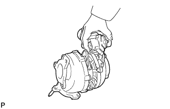
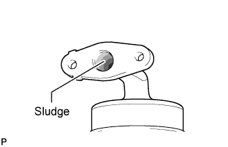
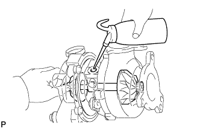

EXHAUST MANIFOLD W/ TURBOCHARGER > PRECAUTION |
| 1.MAINTENANCE PRECAUTION |
Do not stop the engine immediately after pulling a trailer, driving at a high speed, or driving uphill. Let the engine idle for 20 to 120 seconds before turning the engine switch off. According to the driving conditions, vary the idling time.
Avoid quick acceleration or quickly increasing the engine speed immediately after starting a cold engine.
If the turbocharger is found to be defective, it must be replaced. Also, inspect the source of the trouble including the conditions under which the turbocharger was used. Repair or replace the following as necessary:
Engine oil (level and quality)
Oil lines leading to the turbocharger
 |
Be careful when removing and installing the turbocharger. Do not drop, strike, or grasp easily deformed assembly parts such as the DC motor or push rod during removal and installation.
Before removal, cover both the intake and exhaust ports and the oil inlet to prevent dirt or foreign objects from entering.
 |
If replacing the turbocharger, check for accumulation of sludge particles in the oil pipe. If necessary, replace the No. 1 turbo oil pipe.
If replacing the bolts or nuts, use TOYOTA genuine parts to prevent breakage or deformation.
 |
If replacing the turbocharger, put 20 cc (1.2 cu. in.) of fresh oil into the inlet turbocharger oil hole and turn the turbine wheel by hand to spread oil over the bearing.
If overhauling or replacing the engine, cut the fuel supply after reassembly and crank the engine for 30 seconds to distribute oil throughout the engine. Then reconnect the fuel supply and allow the engine to idle for 60 seconds.
Since the turbine wheel runs at an extremely high speed, if the engine is running without the air cleaner, air cleaner cap and hose, the turbine wheel will be damaged due to entry of foreign particles.